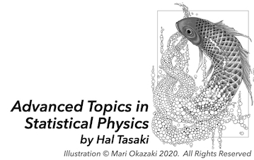

Japanese version / Hal Tasaki's online lectures / Hal Tasaki's YouTube channel
/ Hal Tasaki's main web page
Advanced Topics in Statistical Physics by Hal Tasaki
This is a collection of (more or less independent) graduate-level mini-courses on theoretical/mathematical statistical physics. There are currently two mini-courses on classical systems and one on quantum systems, but I hope the page will expand further. You can download all slides. The material here is partly based on a graduate course that I gave at Gakushuin University.
I wish to thank Mari Okazaki for allowing me to use her fantastic illustration, which was initially drawn for my book.
Proof of the existence of a phase transition in the two-dimensional Ising model (August 2025)
The Ising model (more properly, the Lenz-Ising model), an idealized model of a ferromagnet, is a standard subject in classical statistical mechanics and provides an ideal setting for deeply understanding and studying phase transitions in systems with infinitely many degrees of freedom.
Here, we give a rigorous proof that the most basic version --- the two-dimensional ferromagnetic Ising model --- exhibits a phase transition.
In Part 1, we explain the background and motivation. In Part 2, we fully define the model and state the main theorems.
In Part 3, we prove that the free energy density has a well-defined infinite-volume limit, independent of the choice of boundary conditions. The spontaneous magnetization is then defined as the right-derivative of the free energy density—this is the most canonical, thermodynamically grounded definition of spontaneous magnetization.
Then, in Part 4 and Part 5, by introducing two different stochastic-geometric representations of the model, we prove the two key results of this mini-course: that the spontaneous magnetization vanishes at sufficiently high temperatures, and that it is strictly positive at sufficiently low temperatures --- that is, the free energy density is non-differentiable.
We assume a basic familiarity with statistical mechanics, in particular with the definition and use of the canonical ensemble, but no other specialized background is required. All necessary facts will be explained and proved as needed.
As for mathematics, only an elementary understanding of analysis and standard set-theoretic notation is assumed.
Lectures
Playlist in YouTube
Main references
Related references
The absence of ferromagnetic order in the two-dimensional XY model (August 2025)
The classical XY model serves as a model for certain types of anisotropic magnets and also as an effective model for superconductors and superfluids.
From a theoretical standpoint, it is regarded as the simplest spin system with continuous symmetry.
Spin systems with continuous symmetry exhibit behavior that is fundamentally different—especially in two dimensions—from that of systems with discrete symmetry, such as the Lenz-Ising model.
In fact, the two-dimensional XY model is known to exhibit an “exotic” phase transition called the Kosterlitz-Thouless (KT) transition.
The main aim of this mini-course is to introduce two key results: Wegner's harmonic approximation, which gives an approximate description of the low-temperature behavior of the XY model, and the McBryan-Spencer theorem, which shows that the outcome of this approximation provides rigorous upper bounds on correlation functions (and magnetization).
In Part 1, I begin by spending some time discussing general aspects of phase transitions in classical spin systems related to the main subject --- namely, the Ising model, the XY model, and the Heisenberg model.
Part 2 gives a brief but precise formulation of the XY model.
Part 3 is devoted to a careful exposition of Wegner's harmonic approximation. This is a bold approximation scheme, but I provide a step-by-step account of the calculations, which makes this part rather long.
Part 4 is the core of the mini-course: a proof of the McBryan-Spencer theorem. The theorem is powerful, yet its proof is remarkably simple. I would say it is almost magical!
Part 5, which can be regarded as an appendix, presents a proof based on the random current representation that the correlation function decays exponentially at high temperatures.
Although supplementary, this part has its own charm.
We assume a basic familiarity with statistical mechanics, in particular with the definition and use of the canonical ensemble, but no other specialized background is required. All necessary facts will be explained and proved as needed.
As for mathematics, only an elementary understanding of analysis and standard set-theoretic notation is assumed.
Lectures
Playlist in YouTube
Main references
-
F. Wegner, Spin-Ordering in a Planar Classical Heisenberg Model, Z. Phys. 206: 465-470 (1967).
-
V.L. Berezinskii, Destruction of long-range order in one-dimensional and two-dimensional systems having a continuous symmetry group i. classical
systems. Soviet Journal of Experimental and Theoretical Physics, 32: 493-500, (1971).
-
P.C. Hohenberg, Existence of Long-Range Order in One and Two Dimensions,
Phys. Rev. 158: 383 (1967).
-
N.D. Mermin and H. Wagner,
Absence of Ferromagnetism or Antiferromagnetism in One or Two-Dimensional Isotropic Heisenberg Models,
Phys. Rev. Lett. 17: 1133 (1966); Erratum Phys. Rev. Lett. 17: 1307 (1966).
-
O.A. McBryan and T. Spencer,
On the decay of correlations in SO(n)-symmetric ferromagnets,
Comm. Math. Phys. 53: 299-302 (1977).
Related references
-
Topological Phase Transitions and Topological Phases of Matter (Scientifc Background on the Nobel Prize in Physics 2016)
-
J. M. Kosterlitz and D. J. Thouless, Long range order and metastability in
two dimensional solids and superfluids.(Application of dislocation theory),
Journal of Physics C: Solid State Physics, 5(11): L124, 1972.
-
J. M. Kosterlitz and D. J. Thouless, Ordering, metastability and phase
transitions in two-dimensional systems. Journal of Physics C: Solid State
Physics, 6(7):1181, 1973.
-
J. Fröhlich and T. Spencer,
The Kosterlitz-Thouless transition in two-dimensional abelian spin systems and the Coulomb gas, Comm. Math. Phys., 81 (4): 527--602 (1981).
-
J. Fröhlich, B. Simon, and T. Spencer,
Infrared bounds, phase transitions and continuous symmetry breaking, Comm. Math. Phys. 50(1): 79-95 (1976).
-
R. B. Griffiths, Spontaneous Magnetization in Idealized Ferromagnets, Phys. Rev. 152: 240--246, 1966.
-
T. Koma and H. Tasaki, Classical XY Model in 1.99 Dimensions, Phys. Rev. Lett. 74: 3916-3919 (1995).
-
H. Tasaki, Physics and Mathematics of Quantum Many-Body Systems,
Graduate Texts in Physics (Springer, 2020).
Integrable and non-integrable quantum spin chains (March 2025)
In this mini-course, I discuss two interesting topics on the S=1/2 XY quantum spin chain.
One is the well-known 1961 work by Lieb, Schultz, and Mattis, which showed that the model (without a magnetic field in the X-direction) can be solved exactly by mapping to free fermion models.
The other is a relatively new work that shows the opposite is true for the same model with a nonzero magnetic field in the X-direction.
By extending Shiraishi's work in 2019, Yamaguchi, Chiba, and Shiraishi proved in 2024 that the model possesses no nontrivial local conserved quantities, which fact strongly suggests that the model is "non-integrable."
The present mini-course is almost self-contained.
I only assume basic knowledge of quantum spin angular momenta and elementary facts about many-fermion systems described in the standard wave-function formalism.
In particular, I do not assume knowledge of the formulation of many-body quantum mechanics in terms of annihilation/creation operators (a.k.a. second quantization).
Lectures
Playlist in YouTube
Main references
-
E. Lieb, T. Schultz, and D. Mattis, Two soluble models of an antiferromagnetic chain, Ann. Phys. 16:
407--466 (1961).
-
N. Shiraishi,
Proof of the absence of local conserved quantities in the XYZ chain with a magnetic field,
Europhys. Lett. 128: 17002 (2019).
-
N. Shiraishi,
Absence of Local Conserved Quantity in the Heisenberg Model with Next-Nearest-Neighbor Interaction,
J. Stat. Phys. 191: 114 (2024).
-
M. Yamaguchi, Y. Chiba, and N. Shiraishi,
Complete Classification of Integrability and Non-integrability for Spin-1/2 Chain with Symmetric Nearest-Neighbor Interaction,
(preprint, 2024).
-
M. Yamaguchi, Y. Chiba, and N. Shiraishi,
Proof of the absence of local conserved quantities in general spin-1/2 chains with symmetric nearest-neighbor interaction,
(preprint, 2024).
Related references